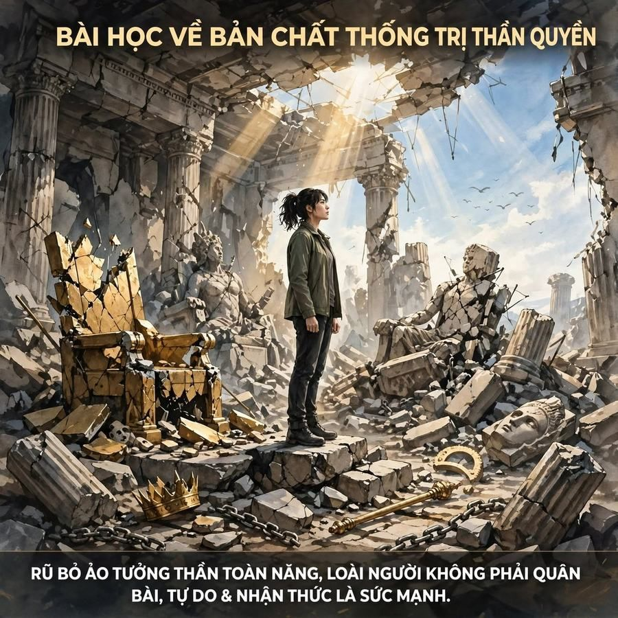
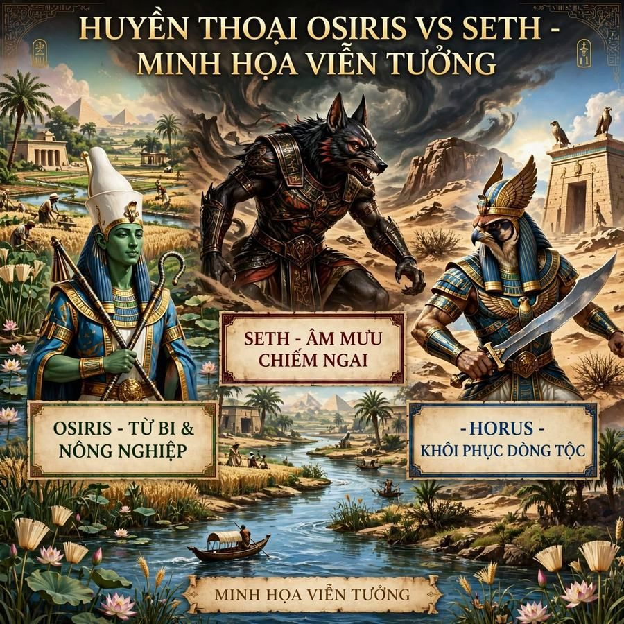
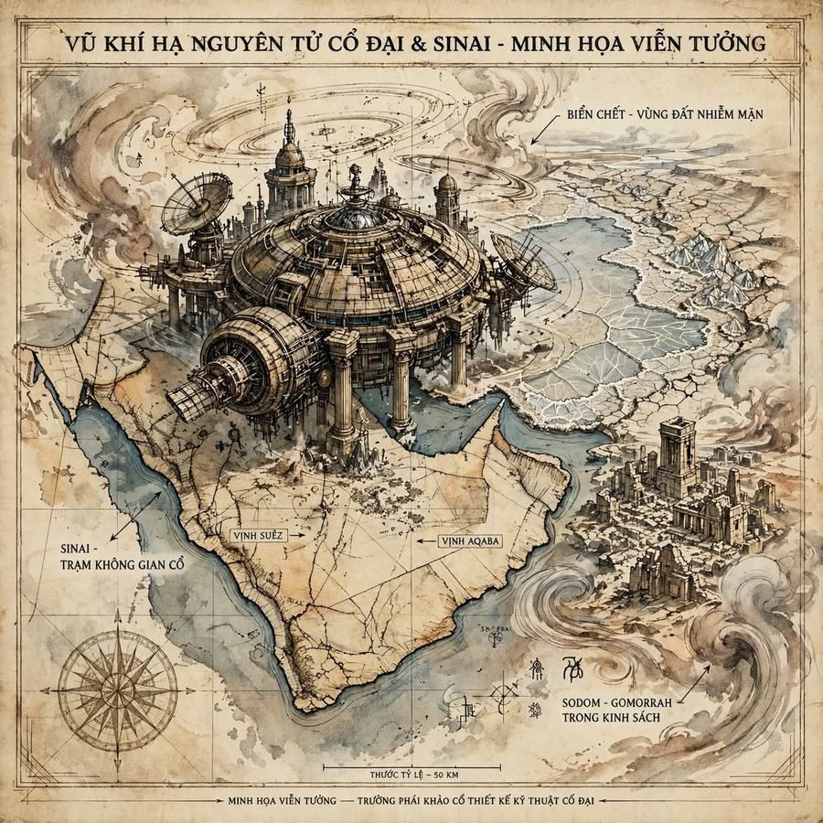
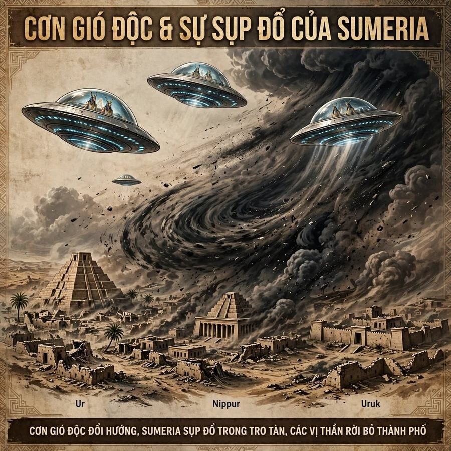
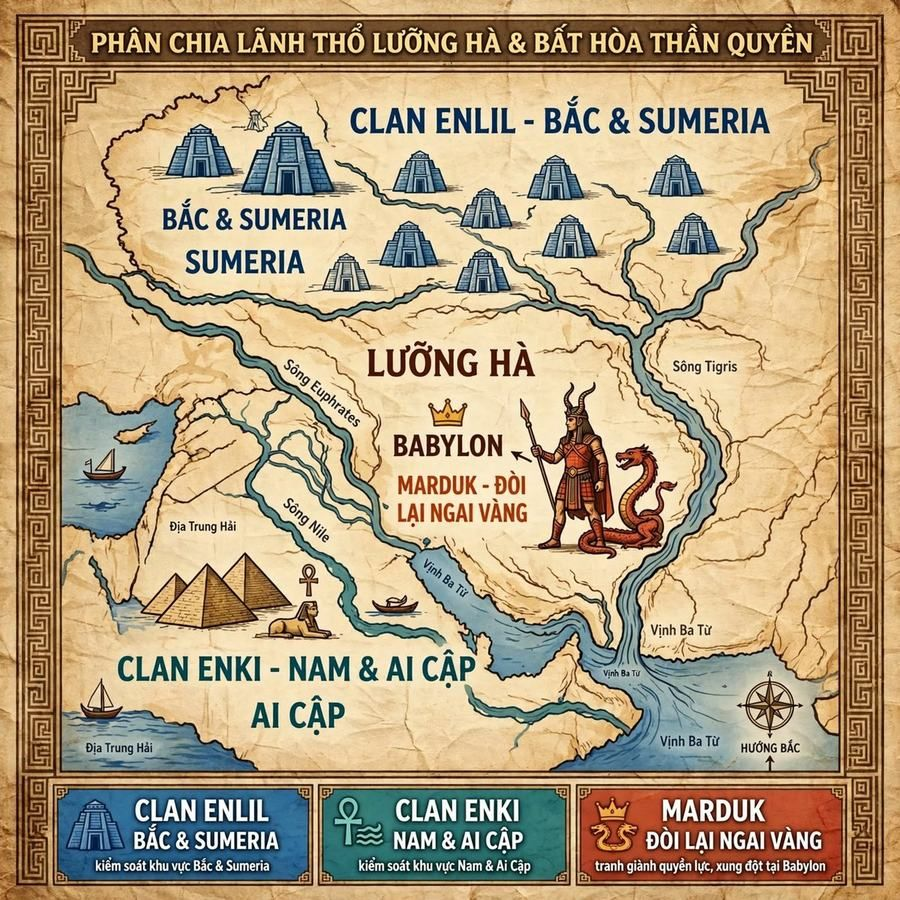

Trang chủ / Chuyên đề 3: Dòng Máu Anunnaki / Kỳ 24
Chuyên đề 3 · Kỳ 24 / 90
TRẬN ĐẠI CHIẾN QUYỀN LỰC ENKI - ENLIL TẠI SUMERIA & AI CẬP CỔ ĐẠI

Ở Kỳ 3, chúng ta đã chứng kiến tuyệt tác di truyền đỉnh cao của Hoàng tử Enki, Công chúa Ninti và Ningishzida (Thoth) khi lén lút lồng ghép bản thiết kế 12 chuỗi DNA Paa-Taal cùng Luân Xa Tim vào chủng tộc Adamu, trao cho loài người khả năng tự sinh sản và tiềm năng thức tỉnh nhận thức vượt ngoài tầm kiểm soát của Anunnaki.
Tuy nhiên, sự bùng nổ dân số của loài người kết hợp với những rạn nứt chính trị âm ỉ giữa hai gia tộc đã biến các trung tâm văn minh cổ đại — từ khu vực Lưỡng Hà (Sumeria) đến Thung lũng sông Nile (Ai Cập) — thành những bãi chiến trường quyền lực đẫm máu.
Đây không còn là những tranh chấp nội bộ đơn thuần, mà đã leo thang thành một cuộc Đại chiến Liên gia tộc Anunnaki với sự can thiệp của vũ khí hạ nguyên tử, pháo đài từ trường và sự phân chia phe phái kéo theo số phận của hàng triệu con người Trái Đất!
Mâu thuẫn cai trị giữa Clan Enki và Clan Enlil tại Sumeria nổ ra như thế nào? Thần thoại Ai Cập cổ đại về cuộc chiến giữa Osiris và Seth thực chất ẩn chứa bí mật lịch sử nào của hai gia tộc? Sự thật về những vụ nổ hạt nhân cổ đại xé rách bán đảo Sinai và khu vực Biển Chết ra sao? Và bài học lịch sử này để lại dấu ấn gì cho nhận thức của chúng ta ngày nay?
Hãy cùng dấn thân vào Kỳ 4: Trận Đại Chiến Quyền Lực Enki - Enlil Tại Sumeria & Ai Cập Cổ Đại để khai quật những trang sử bị che giấu đằng sau các thần thoại cổ đại!
✦ ✦ ✦1. PHÂN CHIA LÃNH THỔ LƯỠNG HÀ VÀ SỰ BẤT HÒA GIỮA CHỦ SẮC THẦN QUYỀN
Sau khi dự án Adamu thành công và cuộc nổi loạn của chủng người Igigi chấm dứt, Hội đồng Hoàng gia Anu đã tiến hành phân chia ranh giới cai trị trên Trái Đất để tránh mâu thuẫn trực tiếp giữa hai vị Hoàng tử.
A. Bản Đồ Phân Chia Lãnh Thổ Nguyên Thủy
- Clan Enki (Phe Nam & Biển Cả): Enki cùng các con trai (như Marduk/Ra, Ningishzida/Thoth) được trao quyền quản lý vùng đất Abzu (Nam Phi), các hầm mỏ khai thác và khu vực đồng bằng trù phú Thung lũng sông Nile (Ai Cập cổ đại).
- Clan Enlil (Phe Bắc & Đô Thị Trung Tâm): Enlil cùng các con trai (như Ninurta, Nannar/Sin) nắm quyền chỉ hoạt tại khu vực Edin (Lưỡng Hà / Sumeria), nơi đặt trung tâm chỉ huy không gian Bad-tibira, trung tâm liên lạc Nippur và các đại đô thị thần quyền.
B. Ngọn Lửa Tranh Chấp Quyền Thừa Kế Kéo Dài
- Sự Đố Đố Giữa Các Hậu Duệ: Mâu thuẫn không dừng lại ở hai người anh em Enki và Enlil, mà lan rộng sang thế hệ con cháu. Marduk (Ra) — con trai trưởng của Enki — luôn cảm thấy gia tộc mình bị chèn ép dù cha ông là con đầu lòng của Thần Anu. Marduk khao khát đòi lại ngai vàng tối cao và quyền cai trị toàn bộ Trái Đất từ tay phe Enlil.
- Sử Dụng Con Người Làm Quân Bài: Cả hai phe bắt đầu lôi kéo các bộ tộc con người Adamu vào cuộc chiến phe phái. họ truyền dạy kỹ thuật chế tạo vũ khí, thành lập các đại quân thần quyền và biến loài người thành lực lượng tác chiến cho các trận đánh của các "vị thần"!

2. BIẾN CỐ AI CẬP CỔ ĐẠI: HUYỀN THOẠI OSIRIS VS SETH DƯỚI GÓC NHÌN GIẢI MẬT
Thần thoại Ai Cập về cuộc đối đầu giữa Thần Osiris và Thần Seth chính là bản ghi chép lịch sử bị mã hóa về cuộc xung đột giữa hai gia tộc Anunnaki tại vùng đất Khem (Ai Cập).
A. Osiris — Hậu Duệ Mang Tinh Thần Từ Bi Của Enki
- Nhà Lãnh Đạo Được Loài Người Yêu Mến: Osiris (con trai của Enki/Ea) được giao quyền cai trị khu vực Ai Cập. Thừa hưởng tính cách từ cha, Osiris cai trị bằng sự hòa nhã, truyền dạy cho người dân kỹ thuật nông nghiệp, âm nhạc, y học và thuật ướp xác bảo tồn thể phách.
- Sự Thịnh Vượng Của Ai Cập Cổ Đại: Dưới sự dẫn dắt của Osiris và Isis, Ai Cập bước vào Kỷ nguyên Vàng phát triển rực rỡ, thu hút sự ngưỡng mộ của các bang tộc lân cận nhưng cũng kích hoạt sự đố kỵ dữ dội từ phe Enlil.
B. Seth — Chiến Binh Hung Hãn Của Clan Enlil
- Âm Mưu Ám Sát Lịch Sử: Seth (người liên minh với phe Enlil) đã lập mưu ám sát Osiris, phân chặt thể xác ông thành nhiều phần và ném xuống sông Nile để chiếm đoạt ngai vàng Ai Cập.
- Trận Chiến Trả Thù Của Horus: Horus (con trai của Osiris và Isis) sau khi trưởng thành đã phát động cuộc chiến chính nghĩa đánh bại Seth, khôi phục lại dòng tộc Enki tại Ai Cập. Cuộc chiến này đã làm rung chuyển toàn bộ cấu trúc ngoại giao giữa hai gia tộc trên toàn cầu.

3. VŨ KHÍ HẠ NGUYÊN TỬ CỔ ĐẠI VÀ THẢM HỌA XÓA SỔ BÁN ĐẢO SINAI
Đỉnh điểm tàn khốc nhất của cuộc chiến quyền lực xảy ra khi phe Enlil quyết định đập tan tham vọng thống trị của Marduk (Ra) bằng các vũ khí hủy diệt hàng loạt.
A. Sự Chiếm ĐẠT Trạm Không Gian Bán Đảo Sinai Của Marduk
- Nắm Giữ Chìa Khóa Du Hành Vũ Trụ: Marduk cùng lực lượng trung thành đã chiếm đóng trung tâm điều hành không gian tại Bán đảo Sinai — nơi đặt Cổng Sao và đường băng cất hạ cánh cho các tàu du hành Nibiru.
- Nguy Cơ Sụp Đổ Quyền Lực Của Enlil: Nhận thấy nếu Marduk kiểm soát Bán đảo Sinai, phe Enlil sẽ bị cô lập hoàn toàn và mất quyền liên lạc với Thần Anu tại quê hương.
B. Quyết Định Đốt Hạt Nhân Của Hội Đồng Enlil (2.024 TCN)
- Tung Ra 7 Vũ Khí Hủy Diệt (The 7 Weapons of Terror): Được sự chấp thuận ngượng ngùng từ Thần Anu, Ninurta (con trai Enlil) và Nergal đã kích hoạt 7 đầu đạn hạt nhân/năng lượng siêu cao tần giội thẳng xuống Bán đảo Sinai và các đô thị liên minh của Marduk.
- Sự Ra Đời Của Biển Chết & Thảm Họa Sodom - Gomorrah: Các vụ nổ hạt nhân đã bốc hơi toàn bộ trạm không gian Sinai, xé rách cấu trúc địa chất, biến khu vực đồng bằng trù phú thành vùng Biển Chết nhiễm mặn và trần ai tro tàn. Thảm họa này chính là nguồn gốc của câu chuyện hủy diệt thành Sodom và Gomorrah trong kinh sách cổ!

4. ĐÁM MÂY PHÓNG XẠ "CƠN GIÓ ĐỘC" VÀ SỰ SỤP ĐỔ CỦA VĂN MINH SUMERIA
Trớ trêu thay, hành động cuồng nộ bằng vũ khí hạt nhân của phe Enlil đã mang lại một hậu quả thảm khốc ngược lại cho chính đại bản doanh của ông.
A. "Cơn Gió Độc" (The Evil Wind) Đảo Chiều
- Đổi Hướng Gió Vũ Trụ: Sau khi các vụ nổ hạt nhân xảy ra tại Sinai, một trận bão bụi phóng xạ khổng lồ (mà các văn bản Sumeria gọi là The Evil Wind / Cơn Gió Độc) không bay về phía vùng đất của Marduk, mà lại bị hướng gió tự nhiên đẩy trực diện về phía các đại đô thị Sumeria của Enlil!
B. Sự Diệt Vong Của Nền Văn Minh Sumeria Rực Rỡ
- Các Thành Phố Chết Trong Lặng Câm: Đám mây phóng xạ đen ngòm tràn qua Ur, Nippur, Uruk và Lagash. Người dân và động vật gục ngã hàng loạt, nguồn nước bị độc hại, cây trồng héo quắt.
- Sự Bỏ Chạy Của Các Vị Thần: Các lãnh đạo Anunnaki thuộc phe Enlil hoảng loạn leo lên các đĩa bay rời bỏ thành phố, để lại hàng trăm ngàn con người Adamu chết trong đau đớn. Nền văn minh Sumeria lừng lẫy 4.000 năm chính thức sụp đổ trong tro tàn phóng xạ!

5. LỜI KẾT KỲ 4: BÀI HỌC VỀ BẢN CHẤT CỦA SỰ THỐNG TRỊ THẦN QUYỀN
Trận đại chiến quyền lực Enki - Enlil tại Sumeria và Ai Cập cổ đại mang lại cho chúng ta bài học thức tỉnh sâu sắc:
- Rũ Bỏ Ảo Tưởng Về "CÁC VỊ THẦN TOÀN NĂNG": Những "vị thần" trong truyền thuyết cổ đại thực chất là một chủng tộc ngoài hành tinh sở hữu công nghệ cao nhưng vẫn mang đầy sự tham lam, đố kỵ, kiêu ngạo và sẵn sàng hủy diệt cả một hành tinh vì quyền lực cá nhân.
- Loài Người Không Phải Là Quân Bài: Sự hy sinh của hàng triệu con người trong các cuộc chiến thần quyền nhắc nhở chúng ta: Đừng bao giờ trao sự tự do và nhận thức của mình cho bất kỳ lực lượng cai trị bên ngoài nào, dù họ tự xưng là "thần thánh" hay "đấng cứu thế"!
